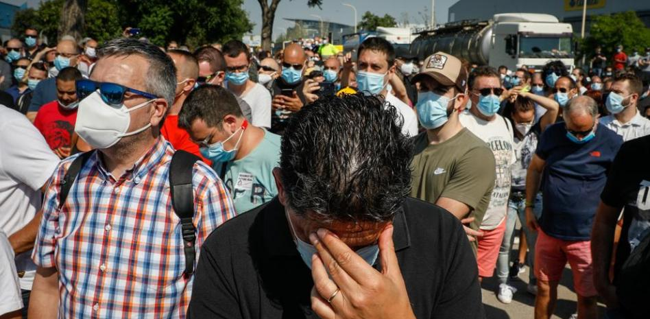
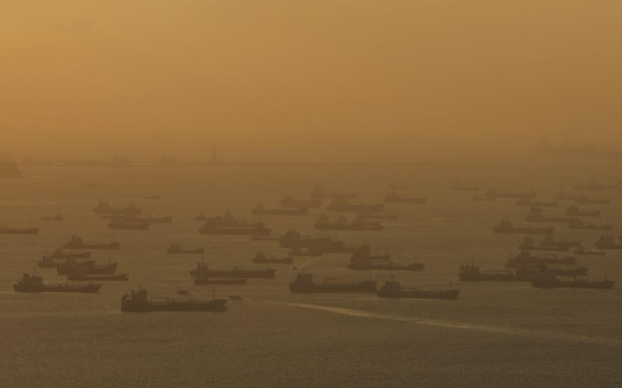

La falta de pruebas y de unidad en la UE lastraron la lucha contra el virus
La epidemia apenas acaba de asomar en Europa en un pequeño grupo de municipios del norte de Italia y los países ya asumen que carecen de la capacidad de hacer todas las pruebas diagnósticas necesarias. También observan que los primeros casos atendidos en los hospitales han causado “contagios entre el personal sanitario”. El representante de un país (que el acta no precisa) alerta incluso sobre “la falta de máscaras quirúrgicas” en los centros sanitarios. Todo ello lleva al ECDC a elevar la evaluación de riesgo global para Europa de bajo a moderado y el de que se repitan los brotes “en cualquier país” pasa de “moderado a alto”. La discusión entra pronto en un asunto clave: la definición de caso, que determina los criterios que debe cumplir los pacientes sospechosos para hacerles las pruebas diagnósticas. Hasta entonces solo se hacían a personas con infección respiratoria procedentes de Wuhan y su provincia. Con los casos detectados en Italia, debería regir ese mismo criterio. Pero de hacerse como dice la Organización Mundial de la Salud (OMS) “que define las áreas geográficas a nivel de país”, obligaría a considerar como sospechosa a cualquier persona con síntomas procedente de Italia. Esto, admiten los asistentes, “es muy difícil de llevar a cabo debido a la falta de capacidad de hacer las pruebas necesarias”. Esta discusión es la clave del encuentro y, como no se alcanza un acuerdo, se deja para el final, cuando se pacta “incluir en la lista [de zonas con trasmisión comunitaria] solo los municipios/regiones confinados, no las grandes ciudades cercanas o países enteros”. Pese a las evidentes diferencias de tamaño, los asistentes justifican esta solución aludiendo al caso de China, donde “no se ha incluido a todo el país, sino que se ha delimitado a nivel de provincia”. Pero el jefe científico del ECDC ya avisa que será casi imposible frenar la propagación del virus: “Clasificar la transmisión comunitaria a nivel subnacional probablemente sea relevante solo por unas pocas semanas más, ya que luego es probable que sea generalizada en la mayoría de países”, dice Mike Catchpole. El segundo problema surge cuando, a pesar de la subdivisión hecha de las zonas de riesgo, se baraja la dificultad de disponer de todas las pruebas necesarias. El Consejo recomienda que estas sean realizadas a “cualquier persona con síntomas relevantes que haya estado en una localidad con transmisión comunitaria”, pero deja la decisión final a los países por si prefieren “incluir solo a los casos graves”.
Trump firma una orden ejecutiva para eliminar privilegios de las redes sociales
El mandatario ha firmado una orden ejecutiva destinada a evaluar si su Gobierno puede "eliminar o modificar" la conocida Sección 230 de la ley de Decencia de las Comunicaciones, que exime a las redes sociales de responsabilidad por los contenidos publicados por sus usuarios. Asimismo, anunció que el fiscal general de EE UU, William Barr, trabajará con los Estados para regular estas plataformas. Con esta orden, Trump buscaría castigar a Twitter, Facebook, Youtube o Google si intentan moderar los contenidos publicados en sus plataformas, en medio de un creciente debate sobre hasta qué punto debe llegar la libertad de expresión en Internet. “Estamos aquí hoy para defender la libertad de expresión de uno de los mayores peligros”, dijo Trump antes de firmar el decreto. “No existe un precedente en la historia de EE UU en que un número tan pequeño de empresas controle una esfera tan grande de las interacciones humanas”. Trump, que ha acusado regularmente a las redes sociales de censurar a los políticos conservadores, considera que Twitter y otras plataformas son monopolios que amenazan la libertad de expresión. En su opinión, estas compañías han demostrado tener un "poder sin control para censurar, restringir o editar" los contenidos que publican, por lo que dio 60 días al Departamento de Comercio para que proponga a la independiente Comisión Federal de Comunicaciones (FCC) que se reformen las normas al respecto. La orden, según un borrador al que ha tenido acceso Reuters, acusa a las redes sociales de “censura selectiva” y pide a las agencias federales una revisión de la citada sección 230, que aunque no hace a las redes sociales generalmente responsables de los contenidos publicados por sus usuarios, sí pueden eliminar contenido obsceno, acosador o violento. Sin embargo, como informa Efe, la orden por sí misma no tiene un impacto inmediato ni de gran calado, y parece más un guiño a su base de votantes en el contexto de su pugna con Twitter, que este miércoles enlazó por primera vez un tuit de Trump con información verificada que contradecía lo que el presidente había publicado. Trump acusó a la compañía de interferencia en las elecciones. El senador republicano Marco Rubio también está entre los que argumentan que las plataformas sociales asumen el papel de un "editor" cuando agregan etiquetas de verificación de hechos a publicaciones específicas, según informa la BBC. "La ley aún protege a las empresas de redes sociales como Twitter porque se consideran foros, no editores", añadió Rubio. Numerosos legisladores y expertos legales advirtieron de que la medida promovida por Trump no sobreviviría a una demanda judicial, y una de los dos miembros demócratas de la FCC, Jessica Rosenworcel, dijo en un comunicado que convertir a su agencia "en la policía del presidente (para proteger) su discurso no es la respuesta". Trump reconoció que su orden ejecutiva podría acabar en los tribunales y que el proceso para lograr su propósito podría ser muy largo, por lo que dijo planea trabajar en el Congreso para aprobar la "legislación" que permita sacar adelante esa reforma si no consigue hacerlo por la vía ejecutiva. Quiere resolverlo rápido ante las próximas elecciones presidenciales en el mes de noviembre.
España pierde con Nissan la primera planta de coches en casi una década
La multinacional justifica su decisión por el difícil entorno del sector, con una sobrecapacidad que se ha visto agravada con la pandemia del coronavirus. Después de haber sufrido pérdidas de 5.270 millones de euros en el último ejercicio fiscal, se ha decidido recortar la capacidad global del grupo en un 20%, con Barcelona como primera perjudicada del ajuste. El golpe de gracia se lo ha dado el reparto de zonas geográficas entre los socios de la Alianza Renault-Nissan-Mitsubishi, que otorga a Renault la condición de marca de referencia en Europa. Eso le adjudica el dominio sobre las operaciones industriales. De Ficchy argumentó que la situación de la planta de la Zona Franca se ha deteriorado mucho desde que hace un año se pactó un recorte de 600 empleos y se prometió invertir 70 millones para una nueva planta de pinturas. Y señaló a Mercedes como desencadenante de la decisión de cierre. Según dijo, el contrato para suministrar pick-ups a Mercedes tenía vigencia hasta el 2027 y representaba el 50% de la producción actual de la planta. No obstante, con anterioridad ya se habían retirado de Barcelona otros modelos como el Pulsar o la versión diésel de la furgoneta NV200, que se trasladó a una factoría francesa de Renault. Resultado: Zona Franca se quedó funcionando a menos de un 30% de su capacidad.
La otra cara del hundimiento del petróleo: las navieras convierten sus megabuques en almacenes flotantes alquilados a precios de oro a grandes energéticas
A la tensionada guerra de precios entre Arabia Saudí y Rusia puso la puntilla la caída de la demanda energética derivada de la parálisis económica por la crisis del coronavirus. Se originó un escenario en el que convivieron el exceso de producción de crudo y el desplome de la demanda que presionó los precios del barril a mínimos históricos el pasado abril. Y el problema subyacente no es otro que la falta de espacio de almacenamiento de petróleo en tierra. Sin embargo, en una vuelta de tuerca hay empresas que han visto el filón en esta crisis y han salido airosas de la situación: las navieras tras los megabuques de transporte de petróleo que, de repente, se convirtieron en tanques de almacenamiento flotando a las puertas de las ciudades. Los propietarios de estos megabuques han sabido aprovechar la situación. Tras ellos se encuentran grandes corporaciones como la danesa Maersk, que conjuntamente con la china Kanoko “controlan el flujo que va de Oriente Medio a Asia. También el canal de Ormuz, ese estrecho tan decisivo que une las rutas de los puertos de Irán y Arabia Saudí”, explica el profesor emérito del departamento de Economía y Finanzas de Esade, Robert Tornabell, en una entrevista con Business Insider España. Hasta 130 superpetroleros y Suezmax (los buques adaptados para transitar por el canal de Suez) han sido alquilados por gigantes energéticos como Toyal Dutch Shell, que se ha hecho con el 13% del total de los megabuques, seguido de cerca por la estadounidense Koch. Otros nombres que suenan entre los dueños de estos grandes barcos: la empresa griega Capital Maritime and Trading, Frontline, Pantheon, SeaWorld y Hunter, explica el analista de IHS Markit, Fotios Katsuolas, en una entrevista con Business Insider. También el titán de la logística Trafigura o el grupo Gress figuran entre los beneficiados de esta coyuntura. “La mayoría son empresas europeas, controlan la mayor parte de la capacidad de transporte”, avanza el analista de IHS Markit. A estos nombres cabe añadir el de la belga Euronav, la compañía de gestión de flotas de almacenamiento Dynacom o Maran Tankers Management.
Japón evitó la cuarentena diciendo a toda la población que siguiera 3 simples consejos y ahora está a punto de volver a la normalidad
Sin duda hay factores culturales en juego: Japón es una nación en la que no prima precisamente el contacto entre los ciudadanos, como ocurre en España, y que es conocida por su limpieza y su gran sistema de salud pública dedicado. Estos factores bien podrían resolver la incógnita. No obstante, la mayoría de los expertos dicen que a día de hoy es imposible saber por qué Japón no fue devastado por el virus; de hecho es probable que no lo sepamos hasta después de la pandemia.
Mientras que muchos expertos elogian al Japón por su enfoque descentralizado, otros tienen sus dudas de que haya funcionado. "El enigma del Japón es el hecho de que si no se hace la prueba, no se van a encontrar muchos casos", menciona Jason Kindrachuk, profesor adjunto de patogénesis viral de la Universidad de Manitoba, a Business Insider. El ex jefe de política sanitaria de la Organización Mundial de la Salud, Kenji Shibuya, recalcó a Bloomerg que Japón o bien "ha contenido la propagación centrándose en grupos de contagiados, o bien tiene brotes que aún no se han encontrado".